M 03 (Numbers Game)
Lecture - 03
Ad hoc and Implementation - Module 03 (Numbers Game)
(Refer Slide Time: 00:11)

Welcome to the third module in the first week on AdHoc and Implementation-based problems. In this video, we will be talking about a problem called Numbers Game. This one is, again, a problem that featured in a Google Code Jam contest, this time from way back in 2010. This was the last problem in round 1A that year. Usually, round 1 is a contest that lasts for 2.5 hours.
This particular round had 3 problems that the contestants had to solve in that time. As you can probably tell from the name of the problem, it perhaps involves some sort of a game. I should mention that games are a fairly popular and recurring theme in contest programming. Usually solving these problems requires some background in combinatorial game theory.
But fortunately, this problem is an exception. You can unravel the solution pretty much by making observations from first principles. Although it does not hurt to be familiar with a little bit of game theory. So, if that is you, that is great. But if not, then, hopefully, this exploration motivates you to explore game theory more, because it is a really wonderful topic.
It is not something that we will be covering much more in this course. But certainly, I hope that you have a chance to investigate it more independently. With all that said, let us get started. I will, as usual, begin by presenting the problem statement to you. But this time, I will defer telling you about the actual task for some time, because I want to spend some of the initial time getting the hang of what is going on in the game. We will do a bunch of examples first to get a feel for what is happening. Then I will introduce you to the task that we actually have to perform. So, you might have to wait for it a little bit. Let us get started.
So, this is going to be a 2-player game. The names of the players are Arya and Bran. The situation is that they are given 2 positive integers A and B, which are written on a blackboard in front of them. It is a turn-based game of starting with Arya. So, first, Arya is going to make her move, then it is going to go to Bran and so on. There is no passing: When it is your turn, you have to make a move.
What does a move constitute? What can you do when it is your turn? Well, you can do one of 2 things: You can either update A with ‘A-minus kB,’ or you can update B with ‘B minus kA,’ where k is some positive integer. In other words, you cannot leave the numbers the same as they were before. They have to strictly diminish. The question is, what do you want to achieve?
You might want to speculate about what would the goal of such a game be? Before I actually reveal it to you. For instance, could it be that the first player who makes one of these numbers 0 or negative wins the game? Well, if that is all that you had to do to win, then notice that this is not going to be a very interesting game to play.
If Arya is playing optimally, when it is her turn in the very first move, she is just going to subtract one copy of the larger number from the smaller one. If the numbers are both the same, then it does not matter which one you subtract from which. Either way, you will end up with a number that is either 0 or negative immediately. So, this is a game that will only last for a very short time, and it is perhaps not worth analyzing further.
So, what is the actual objective of this game? It is, in fact, the opposite. The first person who makes one of these numbers 0 or negative, actually loses the game. Now the whole situation is a lot more interesting. It is not obvious at all who is going to win given a pair of numbers. So, let us actually try to get a feel for this by going through some examples. To begin with, let us say that the 2 numbers we have are 12 and 51.
(Refer Slide Time: 04:12)
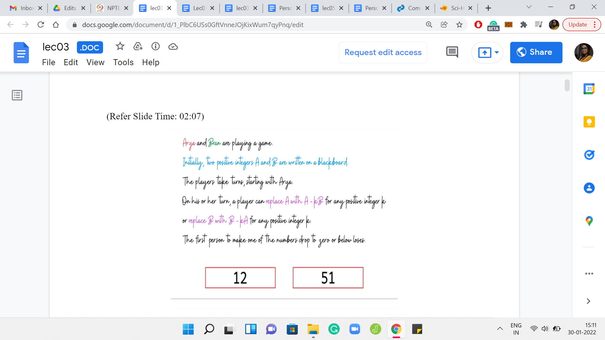


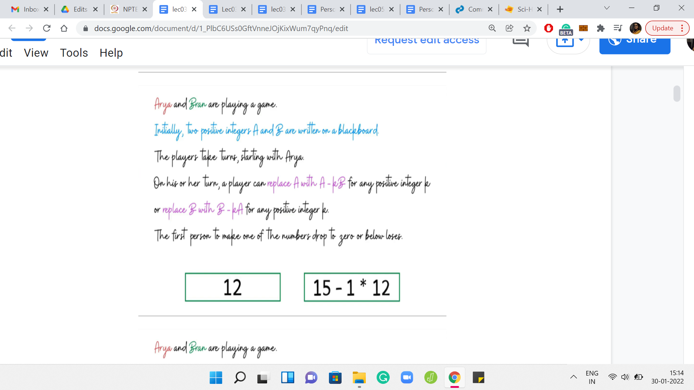


The boxes around these numbers are color-coded based on whose turn it is. So, if the boxes are red, then it is Arya’s turn and if the boxes are green, then it is Bran’s turn. Let us say Arya makes her first move by subtracting 3 copies of 12 from 51. That is going to leave her with 15. Now it is Bran’s turn. Notice that he does not have much of a choice here.
So, he can either subtract one or more copies of 15 from 12. But if he does that, then he immediately loses the game. When he is subtracting k copies of 12 from 15, if k is bigger than 1, then he is again lost immediately. The only valid thing that he can do to stay in the game is to subtract one copy of 12 from 15. Let us say he does that. Then he is left with 12, 3, which is what gets passed on to Arya.
Please take a moment here to think about if Arya has a winning move at this stage. In particular, can she do something to ensure that in the next step, Bran is left with no choice, but to make a move that causes him to lose the game? Notice that Arya has limited options here, she can either subtract 1, 2, or 3 copies of 3 from 12. If she subtracts any more then she herself loses the game immediately.
However, Arya does have 3 choices of valid moves that would still keep her in the game. By now, you have probably guessed that among these options, her optimal move is to subtract 3 copies of 3 from 12. Because when she does this, she is left with the configuration of 3, 3, which is what she hands over to Bran. Now you can tell that poor Bran in this situation is completely stuck.
Any move that he makes will be a losing move. He has, as a result, lost the game and Arya has won. Before we go on to discuss more examples, I would like to introduce a very important concept, which is the notion of a winning position. This is actually a part of the problem statement and is going to be very important for us to understand the tasks that we have to perform later on.
We are going to say that A, B is a winning position if Arya can always win a game that starts with A, B on the blackboard, no matter what Bran does. In other words, no matter how cleverly Bran plays his moves, whenever it is his turn, Arya will always have a way to inch closer towards victory. That is when you say that A, B is a winning position. So, in more standard game-theoretic terminology, you would say that Arya has a winning strategy.
A winning strategy gives Arya a way in which to respond to Bran’s every move in a way that, in the end, she emerges victorious. Of course, it may not always be possible for Arya to have a winning strategy. But it turns out that for games like these, if Arya is not in a winning position, then Bran is in a winning position. So, every conceivable state of the game can be identified as being either winning or losing for one of the players.
If you are hearing about the concept of a winning strategy for the first time, you might find it a bit confusing or puzzling. You might wonder how the state of the game determines whether a player is going to win or not? Does not it depend on their individual skill levels? Does not depend on whether they are having a good day or not, and things like that?
Let me just clarify a couple of things briefly. One is that in such games, we always assume that the players are playing optimally and that they have the skills to make the best move that is theoretically possible, at any given point in the game. This is sort of a working assumption in all of our definitions. Also, notice a few interesting characteristics of this game we are playing that make it different from the games that you might be used to in your day-to-day life, like say, cricket or poker.
One thing is that this game does not have any element of chance in it. When either player is making a move, and for example, saying something like ‘reduce A by k*B,’ then that is going to happen. It happens in a very deterministic way. So, there is no element of randomness, unlike in, say, games of cricket, for instance, where you might plan to do something, but that may not happen depending on the circumstances, which are not completely in your control.
The other thing about this game is that it is a perfect information game. Everybody knows what is going on unlike, say, games of poker where you may not know what cards your opponent has in their hand. So, it makes these types of games quite special. You can find out more about these games by looking specifically for combinatorial games. The fact that the kinds of games we are discussing here, every position is either winning or losing for one of the players involved, follows by doing some kind of a backward induction argument on an object called the game tree.
(Refer Slide Time: 09:21)

The game tree is built out by essentially mapping all the possible moves that can be legitimately made by one of the players from the starting state of the game. You just keep building this out till you reach states from where no more progress can be made. Those states are then labeled as being losing for whatever player is stuck in that state. From here, you can work your way backwards to say that, in general, if you are at a non-terminal state, then that state is winning if and only if you can make a move from here that is losing for the other player.
In other words, if you are at a state from where every possible move that you can make leads you to a position that is winning for the other player, then the current position is losing for you. You can fill in the details of this argument to see that every position in the game tree can be uniquely labeled as being winning or losing for one of the 2 players. It is a good idea to think about where our assumptions about things like perfect information, and the absence of randomization are useful in making this argument work. But for now, hopefully, you are convinced that this notion of a winning position is sensible. Let us try to get some practice with this by looking at a few examples.
(Refer Slide Time: 10:33)

Suppose you have 2 numbers: 1 and 42. It is Arya’s move. Do you think this position is winning for Arya? Well, if one of the numbers is 1, and the other number is some number that is greater than 1, let us say x, then you can simply subtract ‘x-1’ copies of 1 from x. This leads you to configuration 1, 1, which is losing for the other player. So, whenever one of the numbers is 1, the first player has an advantage and can, in fact, win the game in just one move.
(Refer Slide Time: 11:16)

The next example is when you have 2 numbers that are identical. Is this a winning position for the first player or not? Hopefully, you have concluded that this is not a winning position. Notice that any move that the first player tries to make in this state is a losing move. There is no way that you can progress to a state where both of the numbers are positive. So, this is not a winning position.
(Refer Slide Time: 11:43)

What about if one of the numbers is a multiple of the other? Just to make sure that we are not in the previous case, let us say it is, the multiplier is strictly greater than 1. In this case, is this a winning position or a losing position? Take a moment to think about it. This scenario is actually winning for the first player, because notice that the first player can remove ‘r-1’ copies of a from ‘ra’ to go to the position ‘aa,’ and that is a position that we saw was losing for the first player. If the first player offers up this position to the second player then the second player is bound to lose. So, this is a winning position for the first player.
(Refer Slide Time: 12:26)

In the next example, we have ‘a’ and ‘b’ with the property that ‘a’ lies between b and 2b strictly. Of course, if ‘a’ was equal to ‘b,’ we already know what happens. We will come back to the situation when ‘a’ is at least 2b. But what if ‘a’ is in the range strictly between b and 2b? In this case, can we conclude if this position is winning for the first player or not? I should confess that this was a bit of a trick question.
We do not have enough information here to conclude if this position is winning or not for the first player. In fact, you should be able to come up with examples with concrete numbers that satisfy the inequalities here. You could come up with 2 examples, one, which is winning for the first player and the other that is not winning for the first player.
So, there is not enough information here. But one thing that I do want to draw your attention to is the fact that this is a forced situation for the first player. There is only one interesting move that the first player can make here. By interesting, I just mean a move that keeps the player in the game.
Apart from removing one copy of ‘b’ from ‘a’ - so, notice that a is the larger number here, there is no other move, that is a valid move, in the sense that any other move is going to lead to the outcome that you lose the game immediately. So, there is only one interesting move here. In some sense, this is a forced configuration. This is a fact that we will make use of later. So, just keep it at the back of your mind.
(Refer Slide Time: 14:12)
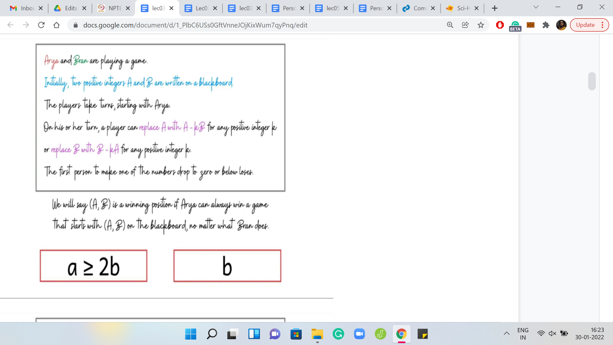
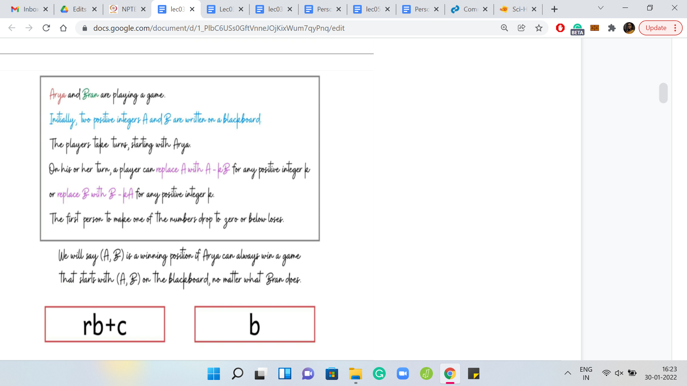
Let us go to the final example, which is probably the most interesting of the ones that we have seen so far. What if ‘a’ is at least 2b? Is there something that we can say conclusively? I will give you a hint here. This is not a trick question like before. You can actually conclusively say if this is a winning position or not for the first player. Take your time and pause for a minute here to think about what might happen here.
Like before, we are in a situation where ‘a’ is larger than ‘b’ but unlike before, it is now substantially larger than b. We have possibly multiple choices for valid moves that we can make. We can certainly remove at least 1 copy of ‘b’ from ‘a,’ but possibly we can remove 2, 3, or more. In fact, let us divide ‘a’ by ‘b’ and suppose it factors as ‘r*b+a remainder c.’
If that is what ‘a’ is going to be, then what should your move be? A tempting thing to say is that maybe just remove as many copies of ‘b’ as you can from ‘a,’ so that you are left with c, b. But if you have played around with enough examples, while we were thinking about this case, you may have realized that it may not always be the optimal move.
However, I promised you that this is not a trick question. We can always identify if this is winning for the first player or not. So, let us think about this a little more, go ahead and do the greedy thing that felt natural to us. Let us say that we remove ‘r’ copies of ‘b’ from ‘a.’
(Refer Slide Time: 15:53)
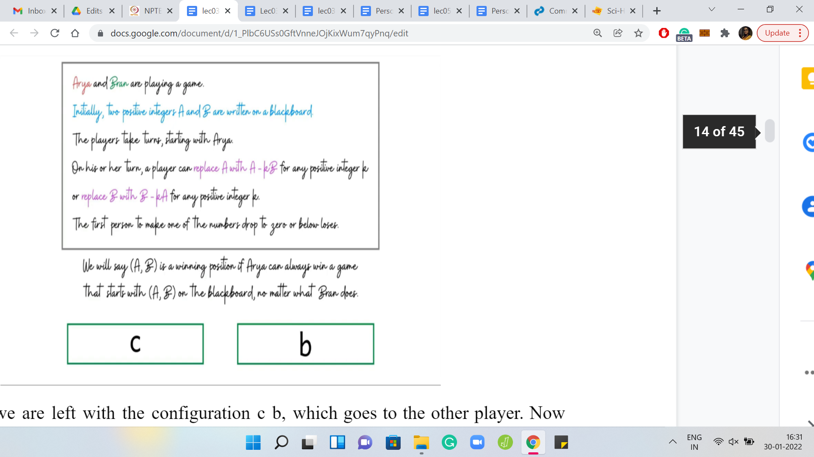
Let us say we are left with the configuration c b, which goes to the other player. Now there could be 2 possible situations. Either c b is a losing position, in which case, this is great, because if c b is a losing position, then the greedy thing was actually the right thing to do. But suppose c b is not a losing position, then it is a winning position. Somehow, that is a position that we want for ourselves. But remember that since ‘a’ had at least 2 copies of b in it, what we can do is we can force the other player to give us the configuration c b. How can we do that?
(Refer Slide Time: 16:31)


We can do that by subtracting ‘r-1’ copies of ‘b’ instead of r copies of b. When we do that, notice that the other player is left with a configuration b+c and b. Now, this is like the situation that we had before. It is a forced situation, simply because ‘c’ is strictly less than ‘b.’ Remember, c was the remainder we got when we divided ‘a’ by ‘b,’ so, c < b. The only move that is legitimate for the other player to make is removing one copy of b from the number b+c.
(Refer Slide Time: 17:08)
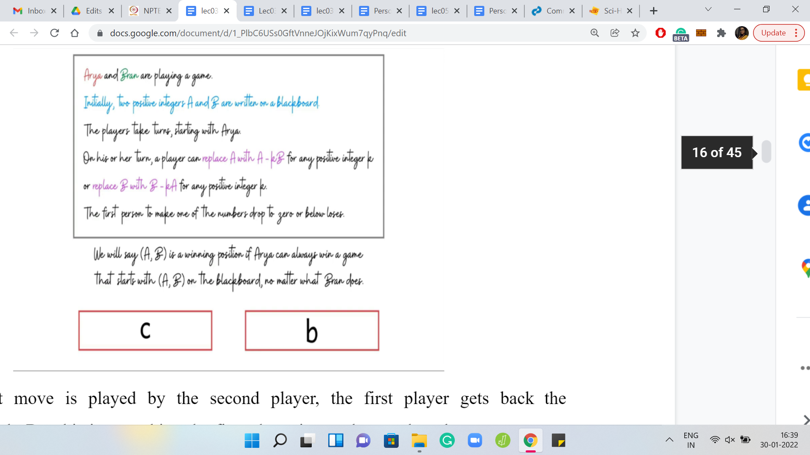
When that move is played by the second player, the first player gets back the configuration c b. But this is something the first player is very happy about because we were in the case when c b was a winning configuration. The point is that irrespective of whether c b is winning or losing, you have a move that you can use to turn the game in your favor.
Just to summarize what we learned from the last example: We saw that if ‘a’ is at least 2*b, then the position is winning for the first player. This is by no means obvious, but it is going to be very useful. I hope you are convinced that this is actually the case. If not, then please go back and revisit the argument that we just made before moving on.
(Refer Slide Time: 17:51)

Let us summarize what we have learned so far. Remember, we are interested in understanding if A, B is a winning position or not. Let us assume that A is at least B. What we have done here as we have mapped the values of A on this number line, and we have highlighted the possibilities in terms of B. Notice that we know that if A = B, then it is actually a losing position. And if A is 2B or more, then it is a winning position.
For values of A that lie between B+1 and 2B-1, this is a mystery. We do not really know what is going on here. If we had to figure out algorithmically if A, B is a winning position, then what we have right here is a fairly natural recursive approach to determining if A, B is winning or not. So, the algorithm will go like this.
If A is at least 2B then say ‘yes,’ if A is B, then say ‘no.’ Of course, the interesting case is the one that remains what happens otherwise. If A is in the range B+1 2B-1 inclusive, then what can we do (at least algorithmically)? One hint at this point is to use some sort of recursive idea. Can you think about what would be a useful configuration to work with?
Take a moment here just to recall what we have discussed so far, and the answer should be evident. Hopefully, you have identified that the configuration of interest here is A-B, B. The reason for this is that when A is in the range B+1 2B-1 inclusive, then the situation is forced for whichever player is playing this configuration.
The only valid move that you can make at this stage is to subtract 1 copy of B from A. What happens from here? Keep in mind that the positions ‘A, B’ and ‘A-B, B’ are being played by 2 different players. Just to make sure that we are on the same page, let me know what do you think should happen if ‘A-B, B’ turns out to be a losing position for whichever player is playing that position?
What can you say about A, B? Well, hopefully, you have concluded that if ‘A-B, B’ is a losing configuration, then A, B is winning. Because from A, B, you are able to generate a configuration that is losing for the other player, which makes you win when you start from A, B. On the other hand, what if ‘A-B, B’ is a winning position? What can you say in this setting?
It is probably predictable but please still think through it before coming to an answer. So, if ‘A-B, B’ is a winning position, then in general, it is still possible that the first player can try to divert to a different position for the second player, which is not a winning position, hopefully. But notice that in this case, we have been pushed into a corner where this move has been essentially forced on us.
Therefore, we can actually conclude that if ‘A-B, B’ is a winning position, then ‘A, B’ is a losing position. Because this is the only position that we can generate starting from A, B, whenever A is in this range. This completes the description of the recursive algorithm. What you do is you try to recursively identify if ‘A-B, B’ is winning or losing. Just remember to flip that outcome to report the correct situation with respect to A, B.
What is the running time of this algorithm? Notice that in every step, if you are not immediately done, then you have generated an instance where the magnitude of the larger number has been reduced by half. As a result, the algorithm will terminate in logarithmically many steps, log of the larger of the 2 numbers that you started within the initial configuration.
In some sense, this seems like a nice approach to figuring out if A, B is winning or not. This is a good time to tell you about the actual task that we have to perform, in this problem. The work that we have done is going to be hugely relevant, but we still have some way to go.
(Refer Slide Time: 22:27)
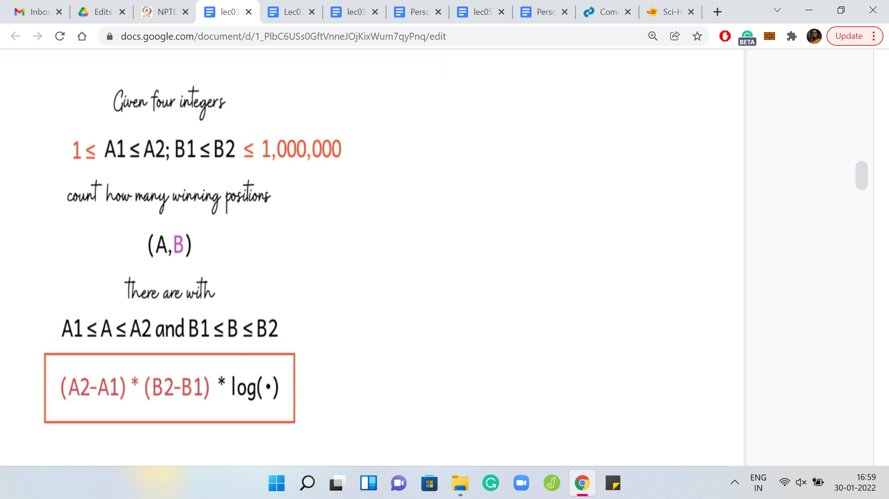
Here is the problem statement, the rest of it. We are given is 4 integers: A1, A2, and B1, B2. We have to count the number of winning positions A, B, for A in the range, A1, A2, and B in the range B1, B2. You might say that let us just try and go over all possible choices of A, B and we have just described an algorithm to figure out if A, B is winning or not.
We can just employ that algorithm and our solution is done. This would be a perfectly valid solution for the smaller data set. But here is the clincher for this problem. If you look at the limits, then it turns out that the ranges of these numbers can be as large as a million. So, now if we were to try and explore the full range of pairs and try to do something for each of them, we are going to be in some serious trouble.
In particular, the algorithm that we just described is going to be way too expensive. So, we need a different approach here. In particular, it looks like since examining every pair of numbers is going to be too expensive, we probably need a way to be able to address multiple pairs at once, or to be able to draw a conclusion about a large collection of pairs somehow magically in one shot.
Specifically, suppose that we fix a choice of B. Let us say we are looping over the range of values of B between B1 and B2. If it were possible that we can identify somehow directly, the number of A’s for which A, B is winning. Keep in mind that B is fixed. We just want to know how many A’s are there for which A, B is a winning configuration.
Just remember that the crux of the matter here is to be able to do this in a way that does not involve examining each of the A’s in turn. At this point, this intuition may seem very vague. So, let us just go back to the drawing board and try to understand the problem more, and see if we can make some sense of this very high-level intuition that we have at this point for what our approach should be.
(Refer Slide Time: 24:39)
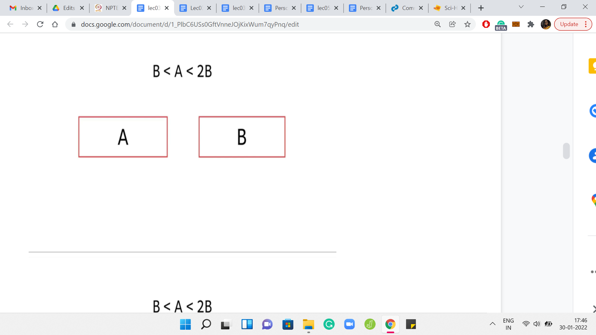

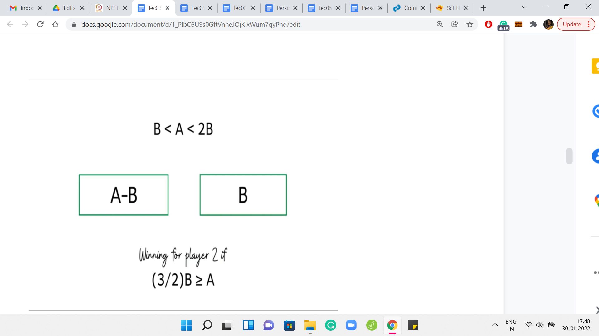

Let us go back to the recursive approach that we were just talking about. Remember that this is the interesting range for A. This is the range that we call the mysterious range where we cannot immediately conclude if A, B is a winning position or not. Let us just unravel the recursion and see what it is going to do. The recursion is going to examine the position A, B, B from the perspective of the second player.
For the second player, we again know that A-B, B is going to be winning if B [which now remember that B is the larger of the 2 numbers here] is substantially larger than A-B. If that happens to be the case, then this configuration is going to be winning for the second player. And in all these cases, we can again directly conclude that ‘A, B’ was losing for the first player.
Let us just expand this out a bit. What you will get is that A should be, at most, 3/2B or 1.5B for this position, the original position A, B to be losing for the first player. Notice that this is now strictly new information because earlier, the only case that we knew of where we could directly conclude that A, B is losing was when A=B. But now we are saying that if A is at most 1.5*B, then also, A, B is a losing position. So, that is interesting. But let us try to unravel the recursion even a little bit further.
(Refer Slide Time: 26:13)

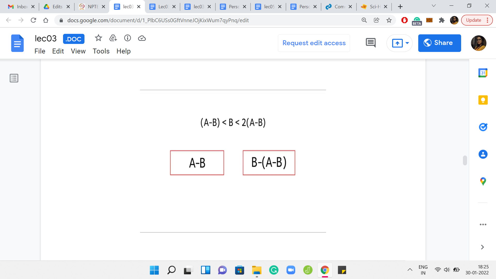
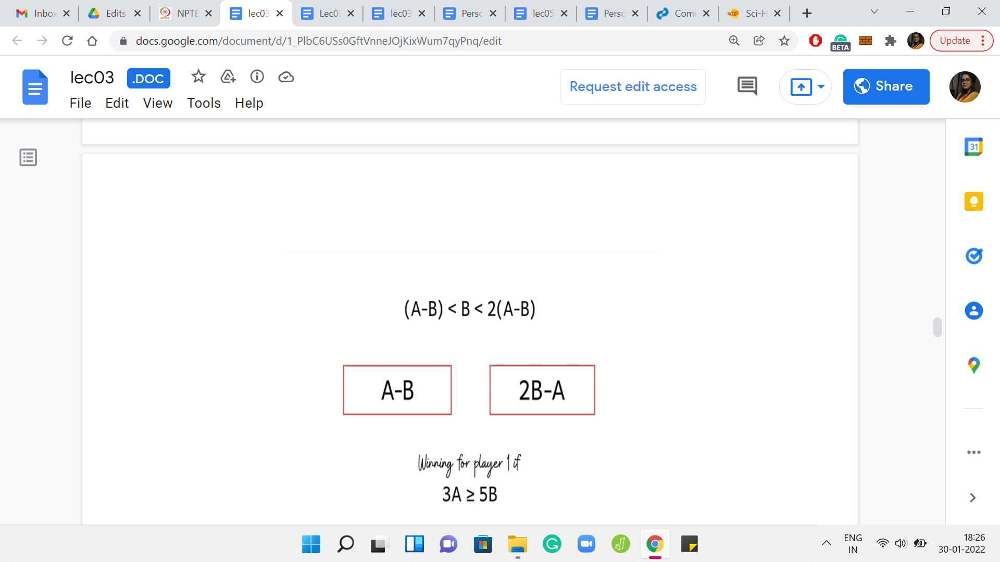
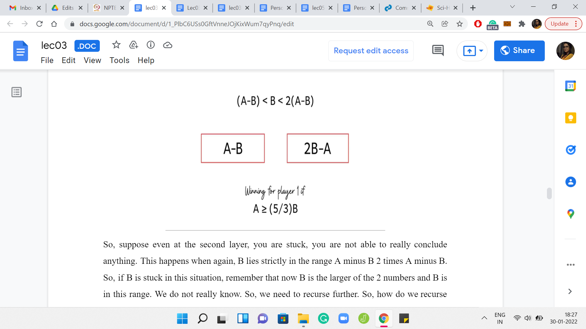
Suppose even at the second layer, you are stuck, you are not able to really conclude anything. This happens when, again, B lies strictly in the range A-B 2*A-B. If B is stuck in this situation, remember that now B is the larger of the 2 numbers and B is in this range, we do not really know. So, we need to recurse further. How do we recurse? Well, of course, we have to remove 1 copy of A-B from B.
Then we need to give this back to the first player. We need to now check out this configuration more closely. So, of course, B-(A-B) is the same as 2B-A. We know that this configuration is winning for the first player, if A-B, which remember that A-B is the larger the 2 numbers now that one copy of A-B has been stolen from B.
If A minus B is substantially larger than 2B-A, then this is winning for player 1. Again, you can do the arithmetic, rearrange the terms and so, on. You will see that this condition boils down to saying that A should be at least (5/3)B. Notice that this is fresh information. Earlier what we knew is that if A is at least 2B then we can do a one-shot answer saying that this is winning. But now we can say that A is winning even if A is at least (5/3)B, which is something like 1.66 or so. So, now we have narrowed down the range that we said was mysterious.
(Refer Slide Time: 27:55)

In fact, let us try to summarize where we are in terms of the extra information that we have after unraveling 2 layers of recursion. Now we have 2 new thresholds. We can actually say more about what positions are winning and losing. This is an improvement. There are more cases in which we are able to directly knock out a conclusion for whether A, B is winning or not.
It seems tempting to wonder if this range of mystery can be made smaller and smaller by unraveling more and more layers of recursion. The current mystery band ranges between 1.5 B and 1.66 B or so. If you are curious, feel free to pause here and just pick up some pen and paper and unravel a couple of layers of recursion more to see if you can shrink this mystery zone a little bit further. You can come back to tally notes with me in the rest of this lecture.
(Refer Slide Time: 28:59)


If you have had to summarize what we learned by just going further and further into the recursion rabbit hole, these are the inequalities that we discover. These inequalities are color-coded by the situations that are good for the respective players. Whenever a red inequality holds, we have the configuration that is winning for the first player. Whenever a green inequality holds, then that configuration is winning for the second player.
Just in case you are wondering where these inequalities came from, let me remind you that we obtain these by simply unraveling more and more layers of the recursive algorithm that we discussed a few moments ago. Let us rewrite these inequalities in terms of A and you will see a bunch of fractions emerging when we do this rearrangement of terms.
By just staring at these numbers, let me ask if any patterns seem to emerge or if these numbers generally look familiar? Well, if you have seen the Fibonacci numbers before, you might recognize that these fractions are just ratios of consecutive Fibonacci numbers. If you actually know about some properties of these ratios, then you can probably already make an educated guess about where this is going.
But if that is not something that strikes is anything significant, let us rewrite the fractions in terms of their decimal counterparts. At least you can see that it seems like we are closing in on the mystery zone. Remember that these numbers signify the ranges of values for which we already know what is happening. In particular, the last 2 inequalities are the tightest and they tell us that we completely understand what is happening when A is at most 1.615*B.
We also know what is happening when A at least 1.619*B. So, the values of A about which we are not sure, are values that lie between, these 2 ratios. So, I am not sure if you have, like, a favorite mathematical constant that lies between these 2 numbers. But if you have heard of the golden ratio before, then that might just come to your mind.
So, you might make at this point, an educated guess that perhaps it is true that the mystery zone actually shrinks and shrinks and meets at the golden ratio. It turns out that there is a reasonably formal sense in which this is actually true.
(Refer Slide Time: 31:36)
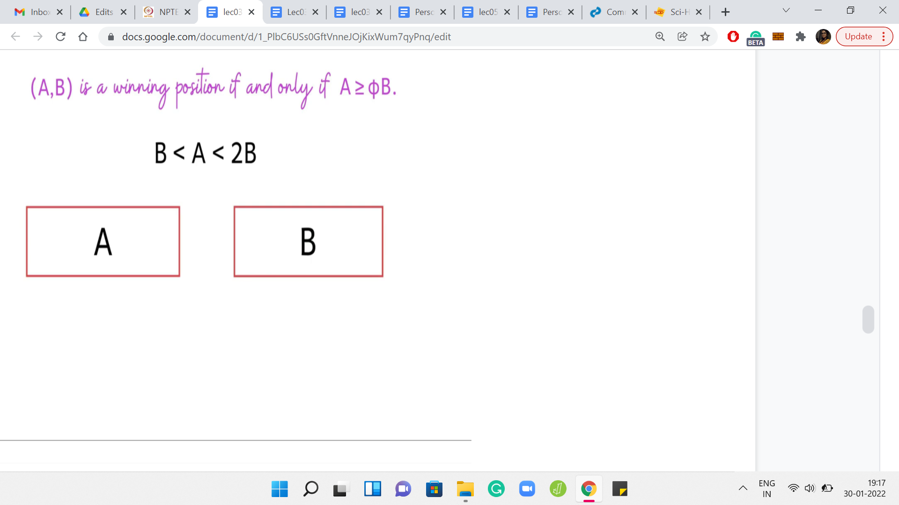
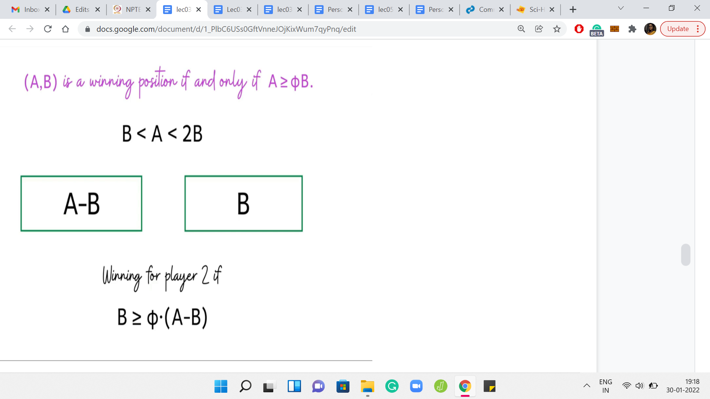


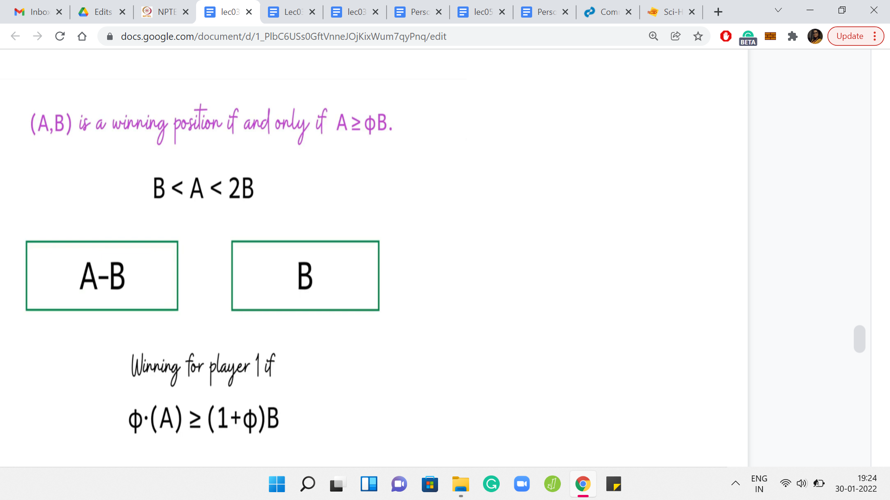

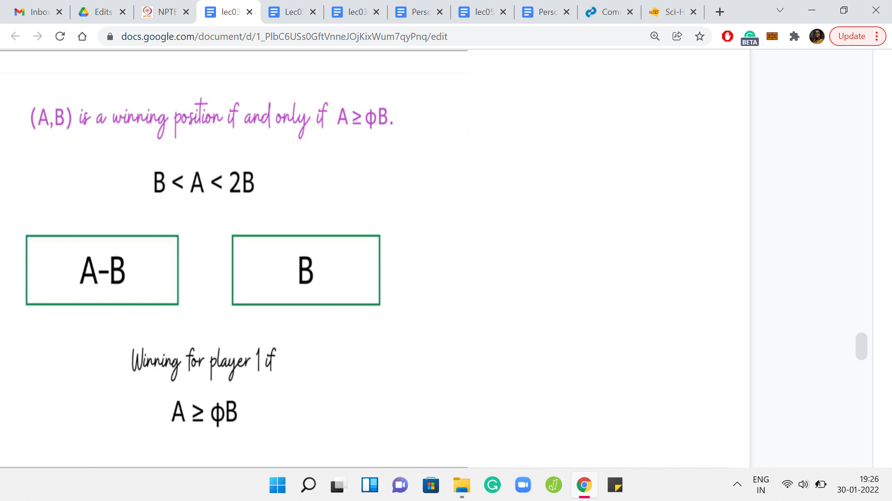
Here is the statement that you can formally prove. It turns out that A, B is a winning position if and only if A is at least Φ*B, where Φ is a mathematical constant known as the golden ratio. If you have not heard of the golden ratio before, do not worry about it. Although it is a really interesting constant to learn more about. You can look it up on Wikipedia, for example.
For now, though, let us just contemplate if this statement is useful for our algorithm. Remember, we said that suppose you fix a B, and if you had a one-shot way of figuring out how many A’s in the range A1, A2 are such that A, B is a winning configuration. That is simply a direct count, you just have to look at the quantity Φ*B. You know that all the values of A that are larger than Φ*B are the ones that form winning configurations along with B.
It is just a matter of counting how many numbers in this range exceed this threshold. We have been working with the assumption that A is at least B. So, when you write your code, you have to account for this kind of symmetry. We will see that more explicitly when we get to coding. But hopefully, it is clear that this statement is extremely useful in getting to the kind of algorithm that we were hoping to find.
I think with this, we have the main pieces of the puzzle in place. The main crux of the idea is hopefully beginning to become quite clear. This is probably a good point to pause the lecture and try out your own implementation if you feel inclined. The rest of this video will do essentially 2 things. The first is to discuss why this claim is true. It is not going to be a ‘very formal’ proof.
It is just going to be an argument that substantiates why you might believe this claim to be true, and you can probably expand it to a more formal argument if you would like to do that. Then we will write some code and implement the solution that we have just discussed. Before we move on, though, let me just try and address a question that might be occurring to you.
How do people come up with such solutions? Especially when we were discussing this solution, the golden ratio seemed to come out of nowhere. You might be concerned if you have not heard of the golden ratio before or if you are not very familiar with the Fibonacci numbers. You might be worried that these intuitions will not emerge as naturally for you.
Let me say 2 things in response to this question. The first is in the context of this particular problem. I should point out that you do not need the full leverage of this theorem to be able to solve the problem for the large tests. All you need is the intuition that there is some threshold, you do not need to really know what that threshold is, you can instead binary search to find it.
For this, you will actually need the algorithm that we discussed in the very beginning. The algorithm for checking if a particular pair is winning or not. Remember, we had a ‘log n’ type of algorithm for that, where n is the larger of the 2 numbers, A and B. So, using that algorithm, what you can do is take the range A1, A2. Take the middle element of this range, and try to figure out if this middle element with B is winning or not.
If it turns out to be winning, then you know that the threshold is lower, and if it is losing, then you know that the threshold is higher, and then you can continue your binary search. You just need to play around with enough examples to develop this intuition that there is some mystery interval, which keeps shrinking and shrinking. There is some threshold, which actually distinguishes the winning positions from the losing ones. You do not need to know what exactly that threshold is, although if you know it, your coding will become more convenient.
While binary search is a very fundamental technique, it does require a bit of care in the implementation. We will be talking a lot more about binary search in the next week. But for now, this is actually a really fun exercise in binary search. If you want to go ahead and get some practice, this would be a good time to do it. The other thing that I wanted to say is not so specific to this problem, but just a more general comment, which is that if you have seen this lecture so far, then you are already somebody who is enthusiastic about learning new things.
I would say that the more you practice, the more you expose yourself to new ideas and new techniques, the more you build up your own toolkit of ideas that you have seen. So, for example, if this happened to be your first encounter with the concept of the golden ratio, then instead of getting worried about the fact that you have not seen it before, approach it with a mindset of positivity by realizing that you have seen it now.
So, you can add it to your notes, or however, it is you keep track of all the new ideas that you learn. It is one more idea in your toolkit. That is how you will eventually develop your own creative flair. In short, my suggestion would be to practice as much as you can. Instead of feeling discouraged by the things that you may not know so far, I would suggest focusing on feeling encouraged by all the exciting new things that you are learning.
Now let us just get back to the statement here. Let us try to figure out why something like this should be true. So, recall that we have the interesting range for A being that it stuck between B and 2B. In this case, we said that the only move that the first player can make is to reduce A to A-B and you go to the configuration A-B, B.
The formal framework that we will use to prove this statement here is the framework of mathematical induction, which you might already be familiar with. The idea is to assume that the statement holds for all configurations, which involves smaller values of A and B. Based on that assumption, we will show that it is true for the configuration ‘A, B.’
The only missing piece here is to say that the statement is true for some sort of a base case. But it turns out that for this statement, the base cases are trivial. I will leave it to you to validate them. But for now, notice that for the interesting range of values of A, we go into a situation, which we are forced to be in, and in this situation, we can apply the induction hypothesis to say that this position is winning for player 2, if B is at least Φ*A-B.
We are able to apply the statement of the theorem directly here. That is the advantage of being able to use what is called the induction hypothesis. We know that this is the condition for this configuration to be winning for player 2. Because this is an ‘if and only if,’ we can turn the inequality around to say that this is the condition for this configuration to be losing for player 2. You might be a bit annoyed that when I am doing not greater than or equal to, I am not saying strictly less than, but notice that A and B are integers and Φ is not an integer.
The inequalities do check out. Let us continue this line of argument and write this in terms of player 1. A configuration that is losing for player 2, is equivalently winning for player 1. So, this is the criteria that we have, if we want the original configuration A, B to be a winning configuration for player 1, except the criteria is written in terms of a condition on the configuration that we reach after one step.
What we have here is that B is at most Φ*A-B. If we rearrange those terms, we see that we can rewrite it as Φ*A being at least 1+Φphi*B, or pushing the Φ to the other side, we have 1+Φ/Φ*B is at most A. That is the inequality that you get. It turns out that it is a property of the golden ratio that 1+Φ/Φ is Φ again.
Applying that we arrive at exactly the statement that we wanted to prove, which is that, for this configuration to be winning for the first player, we need A to be at least Φ*B. With that, we conclude the supporting argument for our main claim. Let us quickly recap what the algorithm is going to do in preparation for the implementation.
(Refer Slide Time: 40:32)

Remember, we have A1, A2, B1, B2 as the ranges of values of A and B. Let us go over all the values of B from B1 through B2. For each of those values of B, we will directly try to identify the number of values of A in the range A1, A2, for which A, B is a winning position. To do that, we will crucially use this claim.
We will just keep adding these numbers to a running tally of the number of winning positions. That is the answer that we will return at the end. So, with this, we have everything we need to know to be able to start the implementation. So, let us just switch to coding.
(Refer Slide Time: 41:06)
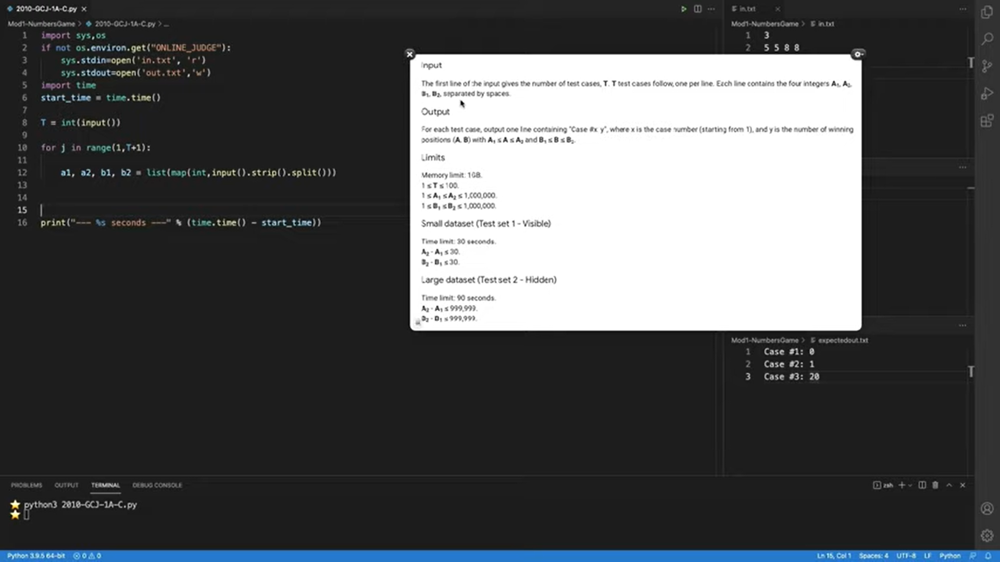
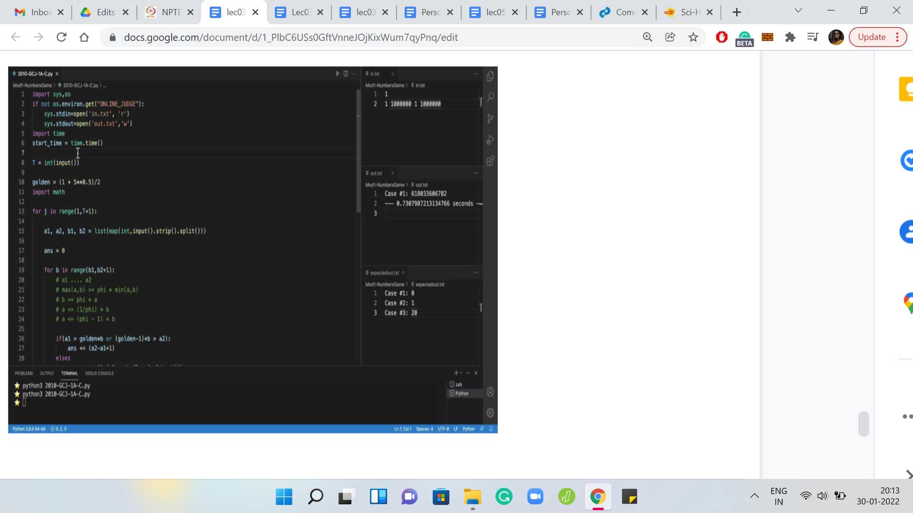

Here we have the usual sort of setup. You will see that the data from the sample input, the sample output, and the problem description have been copied under these files for a sanity check when we need it. Here we have the input-output formats for our reference. The input is T lines and each line is these 4 numbers a1, a2, b1, b2, signifying the range for ‘a’ and ‘b,’ respectively.
Now we need to figure out the number of winning positions ‘a, b,’ for ‘a’ and ‘b’ lying in these in these corresponding ranges. The output format is really simple. We just have to essentially print the case number and the answer. Let us just try to compute the answer based on everything that we have discussed so far. What we said is that we will look at all the values of ‘b,’ we will loop over all the possible values of ‘b.’
Let us say that is ‘b’ in range b1, b2+1. Here, what we said is we will try to figure out how many elements in the range a1 to a2 actually meet the criteria that the ‘a’ is at least Φ*b. This was the threshold that we had. If this threshold is landing somewhere within this range a1 to a2, then you can simply compute the number of a’s, which form a winning position along with ‘b’ by subtracting the threshold Φb from a2 and then taking the seal so that you are left with an integer.
Just keep in mind that the threshold may not actually land somewhere in the middle of this range. It is possible that for instance, the threshold is below a1 or above a2. If the threshold is above a2, then none of these numbers satisfy the criteria that we have in mind. So, none of them contribute to the count of winning positions.
But if the threshold falls below b1, then all the numbers in this range contribute. Let us just make sure that we account for that explicitly. Notice that it is important to account for this explicitly and separately. Because, at least, with the approach that I was describing, if you try to do it in one shot, you will end up overcounting the number of winning pairs.
Before we actually write down the conditionals, let us just do some preparation. I think we want to have a variable that represents Φ, the golden ratio. You might be tempted to write down, like, the actual constant, up to a few decimal places. But I found that it can be dangerous. Because you are working with really large numbers here, you may not get the precision that you want, by just listing out a few digits in the decimal version of the constant. We also, may have to do some floor-ceiling sort of thing.
Let us make sure that the math library is imported. Now we can go back to trying to do the cases that we had in mind. The first thing we said is that if a1 is greater than this threshold, then the entire range of numbers from a1 to a2 actually contributes to the number of winning pairs. So, we need to make sure that our answer is incremented by a2-b1+1.
That is the number of numbers that are there in this range. Now let us look at the ‘else’ part. We want to count the number of numbers in the range a1 to a2, which actually exceeded the threshold, golden*b. A natural way to do that is to say a2-golden*b. You can probably already guess that this is going to be problematic because this expression is not even an integer.
We really want to be counting the number of pairs. So, this is not the right thing to do. It seems like the appropriate thing to do is to take a floor or a ceiling on this threshold. I have to confess that I am very slow with getting these kinds of things right. This is really where a lot of edge cases and corner cases happen. When I am in this situation, I will do something really silly, like take an example and ask myself, suppose the range a1 to a2 was the numbers from 1 to 10.
Suppose the threshold was 7.5. It does not have to be a realistic threshold. It is just, let us say, some fractional number. What do we want now? We want to eliminate everything that is less than 7.5. We want to keep everything that is greater than 7.5. So, what should we subtract from 10? What is the correct thing to subtract from 10 for this to happen?
Well, it happens to be 7. It makes sense to take the floor. That is probably a horribly, non-sort of formal way of saying it. But for these edge cases, I usually find that doing some quick and dirty examples is probably the quickest way of making sure that you got it right. If it is a more tricky corner case situation, you might want to actually really run through some examples like run your code through some test cases and so on before moving forward. But this seems reasonable here.
So, we go ahead and do this. Notice that this may still be a little bit problematic because, for example, what happens if your threshold is above a2? So, we said that, in this case, none of these numbers contribute to the number of winning pairs. But this expression does not reflect that. What are you going to get if, say, the threshold is 12 and the range you are looking at is 1 to 10?
Then, this expression will give you something like 10 minus 12, which is a negative number. That will offset your count in a way that is not good. You just want to stop at 0. When the numbers are negative, you want to basically make sure that they get counted as 0. The simplest way to do that is to take a max with 0. That should work.
This seems like everything that we did discuss so far. But it turns out that if you try to submit this code, you will probably end up getting a wrong answer, which can be a little bit frustrating because it seems like exactly what we have discussed. If you remember during our discussion, I made some passing comments about how when we are actually coding, we should account for symmetries.
Notice that in our entire discussion, we have been saying just assume that ‘a’ is at least ‘b’, and that is without loss of generality. But here, we are really looking at ordered pairs. There is no reason to believe that ‘a’ is at least ‘b’ for the numbers that we are looking at right now. To put this more generally, I would say that the thresholding condition is that max of ‘a, b’ should be at least Φ times min of ‘a, b.’
Now, when it comes to ‘b’ being the larger of the 2 numbers, this translates to ‘b’ is at least Φ times ‘a.’ If you want to understand the criteria in terms of ‘a,’ then that is going to be ‘a’ is, at most, 1/Φ*b. It turns out that 1/Φ is just Φ-1. That is just a slightly more convenient way of writing this threshold. Now let us go to our cases and clean them up in light of this new information.
The other situation where you could have numbers contributing to winning pairs: if ‘a’ is at most Φ-1*b. Now, this is the threshold (Φ-1*b), which was greater than a2. What does that mean? That means that all the numbers from a1 to a2 actually meet this threshold’s criteria. Therefore, they should all contribute to the sum.
We need to enhance our first conditional to account for the situation. We want to say that if Φ-1*b is greater than a2, that means all the numbers in the a1 through a2 meet the criteria that we have written above. Therefore, they should all contribute to the sum. That is a fairly straightforward modification there.
Let us clean up the ‘else’ branch as well. Previously, we had a lower threshold. We were counting everything that essentially went from that threshold, till the end of the range. Now, we have an upper threshold. So, we have to count all the numbers that essentially fall below the threshold, Φ-1*b. So, we need to increment our answer accordingly.
So, once again, we want everything to be below this threshold. Let us again, say, floor for now. If this is not clear, I will just come back and justify it in a minute. But let me just write out the threshold, to begin with. We need to take away minus a1, then we have taken away one more than we need to. So, let us compensate for that by adding 1.
Notice that you might run into the same issue as before, with these numbers being negative. In this case, this could happen when the upper threshold is below a1. If that happens, then this expression will evaluate to a negative number and completely throw off your account. So, it is a simple but important fix to make sure that you take the max with 0.
These are the kind of small edge cases that can seem very mysterious when your code is returning some sort of a wrong answer status. Hopefully, the more practice that you have regarding thinking through this sort of thing, the more alert you will be to do the edge cases. Let us just go through the ritual of running this code and checking the output. It does seem like the output matched here.
This is a good time to remind ourselves that this does not mean very much. In most cases, the sample tests are not enough to account for all the edge cases. Sometimes they are even deliberately misleading, depending on the problem author and things like that. So, definitely, make sure to try and test a little more expansively, especially given that this is a problem involving large numbers. It is easy to generate some random tests, or even just throw in 4 numbers that match the thresholds of the problem, and see how long your code is going to take on this just to make sure, for example, that your code will not timeout when you submit it.
In fact, since this is a fairly easy thing to do, let us just try it right now. Let us say that we set our thresholds to be 1 and a million and run this code again. One of the most common issues that come up when we are discussing choices of programming languages is the issue of Python being slow.
But notice here that this code runs in well under a second. We have really pushed the input to its limits. That is kind of what a good algorithm can do for you. That is the leverage that it can buy. By the way, this reminds me that just in case, you are literally using the same start-up file, before you submit on Code Jam, just make sure to remove all of these operating systems specific things, because otherwise, you will end up getting a runtime error.
So, just submit the part of the code that is relevant to the problem. That is essentially about it. I think we have discussed this problem quite thoroughly. Hopefully, all aspects are clear. In case any of the floors or ceilings are throwing you off, just be sure to work with small examples. I think there is no shame in just doing some quick and dirty examples, no matter how simple, if they help you sanity check the corner cases of your code. So, thanks for watching all the way. If you are stuck with anything, as usual, do join us on Discord. I look forward to seeing you there as well as in the next lecture. Bye for now!